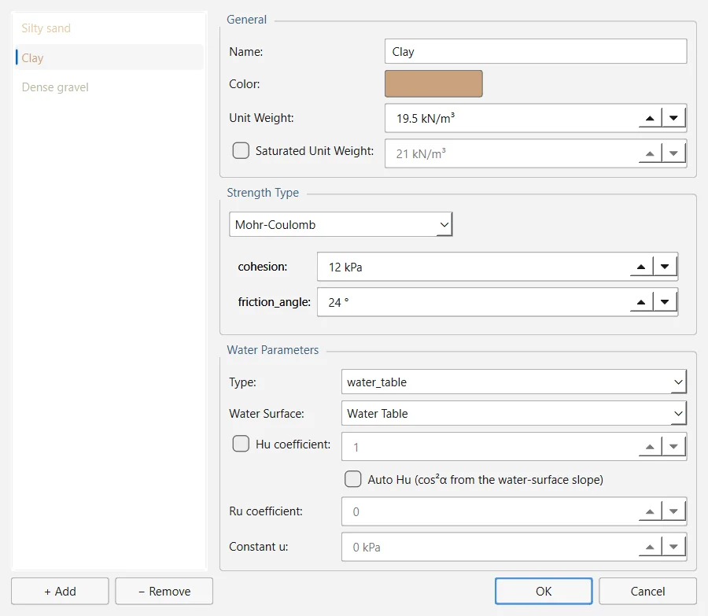

Cada región del modelo está hecha de un material, que fija su peso específico, su resistencia y el origen de su presión intersticial. Los materiales se definen en un único diálogo y después se pintan sobre las regiones del modelo.
2.3.1Definición de materiales#
Abre Properties → Define Materials… (también está en la barra de herramientas y en el menú contextual de una región). La lista de la izquierda contiene los materiales del proyecto, cada uno con su color; + Add crea uno y − Remove borra el seleccionado. Un material nuevo se llama Material n y empieza siendo Mohr-Coulomb, con kPa y .
El editor de la derecha presenta el material seleccionado en hasta cinco grupos. General y Strength Type aparecen siempre; Water Parameters, salvo si el proyecto usa un método de agua subterránea por elementos finitos, y Rapid Drawdown Parameters y Excess Pore Pressure, solo si el proyecto realiza esos análisis. Los cambios se conservan al pasar de un material a otro; OK guarda toda la lista y Cancel descarta todo lo modificado desde que se abrió el diálogo. No hay botón Apply.

General#
| Campo | Significado | Por defecto |
|---|---|---|
| Name | Nombre del material, tal como figura en la lista y en los informes | Material n |
| Color | Color de las regiones de este material en el lienzo; el botón abre un selector de color | marrón claro |
| Unit Weight | Peso específico aparente | 20 kN/m³ |
| Saturated Unit Weight | Peso específico aparente saturado, opcional, que se aplica por debajo del nivel freático. Solo está disponible si el modelo tiene nivel freático. | desactivado / 21 kN/m³ |
| Unsaturated Shear Strength Angle | , el ángulo con el que la succión matricial aporta resistencia; con 0, la succión no aporta nada. Solo se muestra con un método de agua subterránea por elementos finitos. | 0° |
| Air Entry Value | Succión por debajo de la cual sigue rigiendo el ángulo de rozamiento saturado. Solo se muestra con un método de agua subterránea por elementos finitos. | 0 kPa |
El peso específico saturado es el peso específico aparente del suelo saturado, no el sumergido, así que debe ser mayor que el que se usa por encima del nivel freático; si no lo es, el diálogo muestra una advertencia en rojo y conserva el valor introducido. Los dos parámetros no saturados siguen la envolvente de Mohr-Coulomb ampliada de Fredlund, Morgenstern y Widger (1978) y solo cuentan donde un análisis de filtración da presiones intersticiales negativas (Sección 3.6).
Tipo de resistencia#
La lista desplegable del grupo Strength Type ofrece 22 modelos de resistencia. La ecuación del modelo elegido se muestra junto a la lista y, debajo, sus parámetros, cada uno rotulado con el nombre con el que se guarda y con una descripción que se despliega al pasar el cursor. Los modelos que se definen con una tabla (las funciones Shear/Normal, Discrete, C/Phi y Anisotropic, y los intervalos de Generalized Anisotropic) muestran la tabla en su lugar, con los botones + Row y − Row. Snowden Modified Anisotropic Linear lleva además dos botones, Bedding Strength Function… y Rock Mass Strength Function…, y los modelos sin drenaje que dependen de la profundidad, una casilla Apply cutoff.
| Tipo de resistencia | Parámetros (valores iniciales) |
|---|---|
| Mohr-Coulomb | cohesion 10, friction_angle 30 |
| Undrained (φ=0) | cohesion 50, la resistencia sin drenaje |
| Infinite Strength | ninguno; la superficie de rotura no puede atravesarlo |
| No Strength (water) | ninguno; para el agua o para un material sin resistencia al corte |
| Generalized Hoek-Brown | sigci 50 000, mb 2.5, s 0.004, a 0.5; GSI… calcula mb, s y a (Sección 2.3.2) |
| Hoek-Brown | sigci 15 000, m 0.357, s 0.0017 |
| Power Curve | a 0.7, b 1.0, c 3, d 0, waviness 0 |
| Hyperbolic | c_inf 150, phi_0 20 |
| Vertical Stress Ratio | K 0.25, min_strength 0 |
| Barton-Bandis | phi_r 30, JRC 8, JCS 50 000, max_total_friction 75 |
| Drained-Undrained | cohesion 5, phi 28, sigma_threshold 100 |
| Anisotropic Linear | c1 5, phi1 15, c2 20, phi2 30, bedding_angle 0, A 10, B 30; superficie anisótropa opcional |
| Shear/Normal Function | Tabla de tensión normal y resistencia al corte, con interpolación lineal |
| Discrete Function | Tabla de tensión normal y resistencia al corte, en escalones |
| C/Phi Function | Tabla de tensión normal, cohesión y ángulo de rozamiento, con interpolación |
| SHANSEP | S 0.25, m 0.8, OCR 1.0, A 0, su_min 0 |
| Anisotropic Strength Function | Tabla de intervalos de inclinación de la base de la dovela, de −90° a +90°: ángulo hasta, cohesión y ángulo de rozamiento |
| Generalized Anisotropic | Intervalos de inclinación de la base de la dovela, de −90° a +90°, cada uno con la resistencia de otro material del proyecto |
| Snowden Modified Anisotropic Linear | bedding_angle 0, A1 10, B1 30, A2 10, B2 30, más las funciones de resistencia de la estratificación y del macizo rocoso; superficie anisótropa opcional |
| Undrained, c(depth below layer top) | cohesion_top 20, cohesion_change 2 kPa/m, cutoff 100 (con Apply cutoff) |
| Undrained, c(depth below datum) | cohesion_datum 20, cohesion_change 2 kPa/m, datum 0 m, cutoff 100 |
| Undrained, c(distance to slope) | cohesion_top 20, cohesion_change 2 kPa/m, cutoff 100 |
Las ecuaciones de cada modelo, y cómo se emplea una envolvente curva en los métodos de dovelas, están en la Sección 3.5. En Anisotropic Linear y en Snowden Modified Anisotropic Linear aparece bajo los parámetros una lista Anisotropic Surface:. Con (none - use the angle above) se usa el único bedding_angle; si se elige una superficie anisótropa del modelo (Capas débiles y superficies anisótropas), la estratificación pasa a seguirla punto a punto.
Cuando una resistencia no se puede usar (una tabla con las filas desordenadas, intervalos con un hueco entre ellos, un material guardado por una versión anterior cuya tabla ahora significa otra cosa), un mensaje en rojo bajo los parámetros explica el motivo, y OK no acepta el cambio hasta que se corrige. Una fila de tabla que no esté formada por números también impide pasar a otro material.
Con tensión normal nula, la envolvente que usan los dos modelos de Hoek-Brown no da resistencia al corte, y la envolvente de Mohr del propio criterio sí (unos 307.5 kPa con las constantes iniciales de Generalized Hoek-Brown). El programa lo tiene registrado como defecto D171; el criterio se describe en la Sección 3.5.
Parámetros del agua#
El grupo Water Parameters decide de dónde procede la presión intersticial del material. Se describe junto con los métodos de agua subterránea en la Sección 2.4.2; en resumen:
| Campo | Significado | Por defecto |
|---|---|---|
| Type | none (seco), water_table, piezometric, ru, constant o fem (a partir de un campo de filtración por elementos finitos) | none |
| Use the water pressure grid | Con un método de agua subterránea por rejilla, indica si la rejilla da su presión intersticial a este material. Solo se muestra con esos métodos. | activado |
| Water Surface | Nivel freático o línea piezométrica que lee el material; (first of this type) toma el primero que se dibujó | (first of this type) |
| Hu coefficient | Marcada: el propio del material (de 0 a 1). Sin marcar: el valor por defecto del proyecto. | desactivado / 1.0 |
| Auto Hu (cos²α from the water-surface slope) | calculado a partir de la inclinación de la superficie de agua por encima del punto | desactivado |
| Ru coefficient | Relación de presión intersticial (de 0 a 1), para el tipo ru | 0 |
| Constant u | Presión intersticial del tipo constant | 0 kPa |
Solo se habilitan los campos que lee el tipo elegido. El grupo entero aparece en gris con los modelos de resistencia que no leen presión intersticial (Undrained (φ=0), No Strength, Infinite Strength y los tres modelos sin drenaje que dependen de la profundidad) y se oculta si el proyecto usa un método de agua subterránea por elementos finitos.
Un material empieza seco (none). Dibujar un nivel freático no moja nada por sí solo: hay que hacer que los materiales apunten a él, y el diálogo Assign Water Surface lo hace con varios a la vez (Assign Water Surface).
Desembalse rápido y exceso de presión intersticial#
Otros dos grupos aparecen solo cuando se elige, en la página Groundwater de Project Settings, el análisis que los lee (Sección 2.1.4):
- Rapid Drawdown Parameters: Undrained Behaviour (desactivado) señala un material de baja permeabilidad que conserva su exceso de presión intersticial cuando baja el nivel del agua. Con el procedimiento Effective Stress using B-bar, el material usa un valor de B-bar (0 por defecto, de 0 a 5); con los tres procedimientos multietapa, una envolvente sin drenaje, que se fija con Define Strength… como envolvente R en tensiones totales (ordenada en el origen y ángulo) o como envolvente , y cuyo resumen aparece junto al botón.
- Excess Pore Pressure: B-bar (la de Skempton, de 0 a 5) da bajo las cargas aplicadas (Skempton, 1954); con 0, el material es de drenaje libre. Material weight creates excess pore pressure (desactivado) hace que el peso de este material sea una carga para los materiales que tiene debajo; un terraplén sobre un terreno de cimentación arcilloso suele llevarlo activado, con un B-bar de 0.
Ambos análisis se describen en la Sección 2.4.6 y en la Sección 3.8.
2.3.2La calculadora de GSI#
En un material con el tipo de resistencia Generalized Hoek-Brown aparece, junto a la lista, un botón GSI… que abre la Parameter Calculator. Esta calcula las constantes del macizo rocoso a partir del índice de resistencia geológica (GSI), de la constante de la roca intacta y del factor de alteración , según Hoek, Carranza-Torres y Corkum (2002):
| Campo | Significado | Por defecto | Intervalo |
|---|---|---|---|
| GSI | Índice de resistencia geológica; la lista ofrece seis descripciones del macizo rocoso, desde 85 (intacto o masivo, superficies muy buenas) hasta 15 (laminado o cizallado, superficies muy malas) | 50 | 0 a 100 |
| mi | Constante de la roca intacta; la lista ofrece 30 litologías, con valores desde 4 (arcillolita) hasta 32 (granito) | 10 | 0 a 100 |
| Disturbance factor D | Alteración por voladura y por relajación de tensiones; la lista ofrece ocho métodos de excavación, desde 0 (voladura controlada, excavación mecánica) hasta 1 (voladura de producción deficiente o no controlada) | 0 | 0 a 2 |
El grupo Calculated muestra , y a medida que cambian los datos de entrada; Use these values escribe los tres en el material. La resistencia de la roca intacta, sigci, se introduce en el propio material. Con , queda indefinido, así que el programa limita a 1.999 y el diálogo lo avisa. El GSI y son cuestión de criterio, así que elígelos con ayuda de las descripciones de las listas.
2.3.3Asignación de materiales a las regiones#
Las regiones quedan delimitadas por los contornos externo y de material (Contornos de material y regiones). Para asignarles material:
- Elige Properties → Assign Materials. Se abre un panel flotante Assign Materials con la lista de materiales, cada uno con su color, y (None — unassign) en la parte superior; el primer material queda seleccionado.
- Selecciona un material en el panel y haz clic en cada región que sea de ese material. Cada clic se puede deshacer por separado.
- Selecciona el siguiente material y repite. Cierra el panel para volver a la herramienta Select.
Dos atajos hacen lo mismo con una sola región: haz clic con el botón derecho sobre ella y elige un material en Assign Material del menú, que además indica el material actual de la región; o usa Properties → Assign Material, la herramienta de pintado por sí sola, que pinta con el material seleccionado en el panel Assign Materials y, por tanto, solo funciona mientras ese panel está abierto.
La asignación se registra como el punto donde se hizo clic más el perímetro que tenía la región en ese momento. Si un contorno de material dibujado después divide la región, todos los fragmentos conservan el material; si la región ya estaba dividida al hacer clic, solo lo recibe el fragmento sobre el que se hizo clic.
Regiones sin material#
Una región sin ningún material asignado se considera hecha del primer material de la lista de Define Materials. El análisis, los datos al pasar el cursor y el menú contextual de la región la tratan así, y nada avisa de que la región no se ha pintado nunca. Asigna todas las regiones de forma explícita o deja en primer lugar de la lista el material más extendido.
La entrada (None — unassign) del panel Assign Materials todavía no quita la asignación: con ella seleccionada, un clic solo te pide que elijas un material. Para cambiar una región, píntala con otro material.
2.3.4Tablas de propiedades#
Tools → Property Tables muestra tablas del modelo, de solo lectura, con un botón Copy to clipboard: la Material Properties Table (nombre, modelo de resistencia, peso específico, peso específico saturado cuando se usa, tipo de presión intersticial y una columna por cada parámetro de resistencia en uso), la Support Properties Table y la Hydraulic Properties Table. La tabla de materiales también está en la barra de herramientas. Con los datos al pasar el cursor activados, al situar el cursor sobre una región se ven esas mismas propiedades, pero solo las de su material (Datos al pasar el cursor).
2.3.5Importación de propiedades#
File → Import Properties… copia en este proyecto los materiales y los tipos de soporte de otro proyecto .ogr. Tras elegir el archivo, elige qué importar: Materials, Supports o Both (por defecto).
- No se sobrescribe nada de lo que ya hay en el proyecto: si un nombre importado ya existe (sin distinguir mayúsculas de minúsculas), se le añade un número, como en Clay (2).
- Los materiales importados reciben identificadores nuevos y pierden el vínculo con las superficies de agua y las superficies anisótropas del otro proyecto, que aquí no existen; un material que leía una superficie de agua llega seco. Hay que asignarle una superficie de agua de este proyecto (Assign Water Surface).
- Se respeta el límite Max Materials del proyecto (Sección 2.1.2).
- Se importan los tipos de soporte, no los soportes ya colocados.
La barra de estado indica cuántos materiales y tipos de soporte se han importado. Después hay que asignar los materiales a las regiones.
Cada modelo de resistencia es un complemento (plug-in) registrado con su identificador; la lista del diálogo y los campos de parámetros se construyen a partir del registro, de modo que el diálogo y el análisis no pueden discrepar sobre lo que admite un modelo. Los valores se guardan en unidades del SI y se convierten al mostrarlos. El material por defecto de una región sin asignar se aplica en el punto donde se resuelven las regiones, que es también donde las consulta el análisis.
Código: ogr_core/materials/builtin_models.py · ogr_core/materials/parameter_calculator.py · ogr_gui/dialogs/material_properties_dialog.py